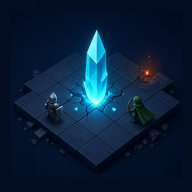

3D turn-based strategy · four armies
Command cyan forces from the southwest corner. Three rival armies hold the other corners. Win by wiping out rival armies. High ground and clustered units hit harder. Enemy armies scout in fog until they make contact. Each army fields 10 units.
You cleared the Ember forces.